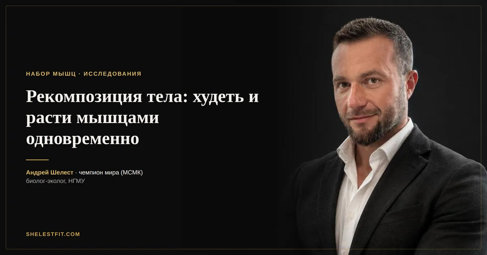

Рекомпозиция тела: можно ли одновременно худеть и расти мышцами
12 августа 2026 · Андрей Шелест

Рекомпозиция одно из самых заезженных слов в фитнес-маркетинге. Обычно им прикрывают отсутствие результата: вес не двигается, а тренер списывает всё на рекомпозицию. Но за термином стоит реальное физиологическое явление, просто оно работает не у всех и не всегда.
Что такое рекомпозиция тела
Рекомпозиция это одновременное снижение процента жира и рост мышечной массы без выраженной раздельной фазы набора или сушки. Вес на весах при этом может почти не меняться неделями: жир уходит, мышцы прибывают, итоговая цифра стоит на месте. Именно поэтому людей, которые ориентируются только на весы, рекомпозиция сбивает с толку.
Кому это реально по силам
Есть три группы, у которых рекомпозиция происходит почти автоматически при правильном питании и тренировках. Первая: новички в первые 6-12 месяцев осмысленных силовых тренировок, у них так называемый эффект новичка, когда мышцы растут особенно быстро на любой адекватной нагрузке. Вторая: люди с высоким процентом жира, у них организм охотно использует жировые запасы как топливо, не жертвуя синтезом белка. Третья: те, кто возвращается к тренировкам после длительного перерыва, у них мышечная память ускоряет возврат массы даже на фоне дефицита калорий.
У этих трёх групп одновременно выполняются два условия, которые обычно противоречат друг другу: достаточно анаболического потенциала для роста мышц и достаточно запасов энергии, чтобы дефицит калорий не мешал этому росту.
Кому рекомпозиция не светит
После нескольких лет регулярных тренировок потенциал роста мышц резко падает. Опытному атлету, чтобы нарастить заметный объём, физиологически требуется избыток калорий. Не потому, что кто-то придумал строгие правила, а потому что синтез новой мышечной ткани попросту дорог по энергии. На дефиците эта скорость роста настолько мала, что не перекрывает потерю жира визуально. Таким атлетам чаще подходит классическая схема с раздельными фазами набора и сушки.
Что нужно, чтобы рекомпозиция сработала
Три условия, и все обязательны. Первое: белок 1.6-2.2 грамма на килограмм веса в сутки, это диапазон, который в исследованиях лучше всего сохраняет и растит мышцы на фоне дефицита калорий. Второе: прогрессивная перегрузка в силовых, без роста рабочих весов или объёма организму незачем достраивать мышечную ткань, дефицит калорий работу и так усложняет. Третье: умеренность в дефиците калорий, 10-15% от поддержания достаточно, глубокий дефицит забирает ресурсы, нужные для роста мышц, и рекомпозиция превращается в обычное похудение с потерей части мышц.
Как понять, что процесс идёт
Не по весам. Ориентируйтесь на три вещи: замеры объёмов тела раз в 2-4 недели, фото в одном освещении и позе, и рабочие веса в базовых упражнениях. Если сила стабильно растёт, а объём талии не увеличивается или уменьшается, рекомпозиция реально происходит, даже если весы показывают ту же цифру, что месяц назад.
И то, что стоит понимать заранее: рекомпозиция это процесс медленный. Прирост в 1-2 кг мышц и потеря 2-3 кг жира за 2-3 месяца при грамотном подходе уже хороший результат, а не провал.
Автор: Андрей Шелест, тренер, чемпион мира (МСМК). Биолог-эколог, окончил Новосибирский государственный медицинский университет, специализация «экология человека».
Это ознакомительный материал, а не индивидуальная рекомендация. Схему под ваши анализы и цели я подбираю персонально.